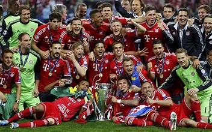
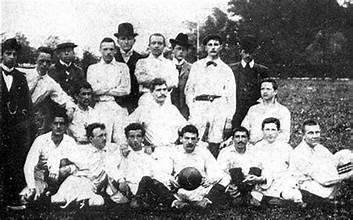
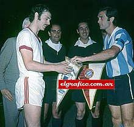
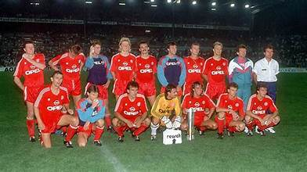
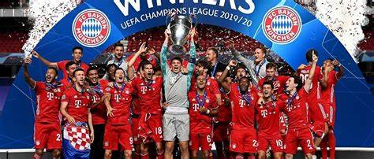
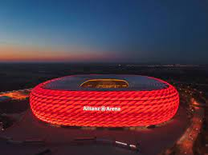

Bayern munich
Awal mula
Klub Fußball Bayern München e. V. (FCB, diucapkan [ˈfuːsbalˌklʊp ˈbaɪɐn ˈmʏnçn̩] ⓘ), juga dikenal sebagai FC Bayern (diucapkan [ˌɛft͡seː ˈbaɪɐn] ⓘ), Bayern Munich, atau hanya Bayern, adalah klub olahraga profesional Jerman yang berbasis di Munich, Bavaria. Ia terkenal dengan pasukan bola sepak persatuan lelaki profesionalnya, yang bermain di Bundesliga, peringkat teratas sistem liga bola sepak Jerman. Bayern adalah klub paling sukses dalam sejarah sepak bola Jerman, setelah memenangkan rekor 33 gelar nasional, termasuk 11 gelar berturut-turut sejak 2013, dan 20 piala nasional, serta sejumlah penghargaan Eropa.
FC Bayern didirikan pada tahun 1900 oleh sebelas pemain sepak bola yang dipimpin oleh Franz John.[5] Meskipun Bayern memenangkan kejuaraan nasional pertamanya pada tahun 1932,[6] klub tersebut tidak dipilih untuk Bundesliga pada awal tahun 1963.[7] Klub memiliki periode yang sukses terbesar di tengah tahun 1970-an, di bawah kapten dari Franz Beckenbauer, memenangkan Piala Champions tiga kali berturut-turut (1974-1976). Secara keseluruhan, Bayern telah mencapai sebelas final Piala Champions/Liga Champions, yang terakhir memenangkan gelar keenam mereka pada tahun 2020 sebagai bagian dari treble benua. Bayern juga telah memenangkan satu Piala UEFA, satu Piala Winners UEFA, dua Piala Super UEFA, dua Piala Interkontinental dan dua Piala Dunia Antarklub FIFA, membuatnya menjadi salah satu klub Eropa yang paling sukses di dunia. Sejak pembentukan Bundesliga, Bayern telah menjadi klub yang dominan dalam sepak bola Jerman dengan 33 gelar dan telah memenangkan 11 dari 14 gelar terakhir. Mereka memiliki persaingan lokal tradisional dengan TSV 1860 München dan 1. FC Nürnberg, serta persaingan kontemporer dengan Borussia Dortmund.
Sejak awal musim 2005-06, Bayern telah memainkan pertandingan kandang di Allianz Arena. Sebelumnya tim telah bermain di Olympiastadion München selama 33 tahun. Warna tim merah dan putih, dan puncak tim menunjukkan bendera putih dan biru Bavaria.[8] Dalam hal pendapatan, Bayern München adalah klub olahraga terbesar di Jerman dan klub sepak bola terbesar keempat di dunia, menghasilkan €587,8 juta pada tahun 2017.[9] Pada musim 2017–18, Bayern memperoleh pendapatan €657,4 juta dengan laba operasional €136,5 juta, menandakan keuntungan finansial selama 26 tahun berturut-rutut.[10] Pada bulan November 2018, Bayern memiliki 291.000 anggota resmi dan terdapat 4.433 klub penggemar resmi terdaftar dengan lebih dari 390.000 anggota.[10] Klub ini memiliki departemen lain untuk catur, bola tangan, basket, senam, bowling, tenis meja, wasit, dan sepak bola senior lebih dari 1.100 anggota aktif.[11]
Sejarah Bayern Munchen

FC Bayern Munich didirikan oleh anggota klub senam Munich (MTV 1879). Ketika jemaah anggota MTV 1879 memutuskan pada tanggal 27 Februari 1900 bahwa para pesepakbola klub tersebut tidak diperbolehkan bergabung dengan Asosiasi Sepak Bola Jerman (DFB), 11 anggota divisi sepak bola meninggalkan jemaah tersebut dan pada malam yang sama mendirikan Fußball- Klub Bayern München. Dalam beberapa bulan, Bayern meraih kemenangan dengan skor tinggi melawan semua rival lokalnya, termasuk kemenangan 15-0 melawan FC Nordstern, dan mencapai semifinal kejuaraan Jerman Selatan 1900-01. Pada tahun-tahun berikutnya, klub memenangkan beberapa trofi lokal dan pada tahun 1910–11 Bayern bergabung dengan "Kreisliga" yang baru didirikan, liga regional Bavaria pertama. Klub ini memenangkan liga ini pada tahun pertamanya, namun tidak memenangkannya lagi sampai dimulainya Perang Dunia Pertama pada tahun 1914, yang menghentikan semua aktivitas sepak bola di Jerman. Pada akhir dekade pertama pendiriannya, Bayern telah menarik pemain tim nasional Jerman pertamanya, Max Gaberl Gablonsky.[10] Pada tahun 1920, klub ini mempunyai lebih dari 700 anggota, menjadikannya klub sepak bola terbesar di Munich.
In the years after the war, Bayern won several regional competitions before winning its first South German championship in 1926, an achievement repeated two years later.[8][11] Its first national title was gained in 1932, when coach Richard "Little Dombi" Kohn led the team to the German championship by defeating Eintracht Frankfurt 2–0 in the final.
Setelah berakhirnya Perang Dunia Kedua pada tahun 1945, Bayern menjadi anggota Oberliga Süd, konferensi selatan divisi pertama Jerman, yang pada saat itu terbagi menjadi lima cabang. Bayern berjuang keras, merekrut dan memecat 13 pelatih antara tahun 1945 dan 1963. Landauer kembali dari pengasingan pada tahun 1947 dan sekali lagi ditunjuk sebagai presiden klub, masa jabatannya berlangsung hingga tahun 1951. Ia tetap menjadi presiden klub dengan akumulasi masa jabatan terlama. Landauer telah dianggap sebagai penemu Bayern sebagai klub profesional dan kenangannya ditegakkan oleh ultras Bayern Schickeria. Pada tahun 1955, klub ini terdegradasi tetapi kembali ke Oberliga pada musim berikutnya dan memenangkan DFB-Pokal untuk pertama kalinya, mengalahkan Fortuna Düsseldorf 1-0 di final.
Namun, klub ini mengalami kesulitan finansial dan berada di ambang kebangkrutan pada akhir tahun 1950an. Presiden produsen yang digulingkan, Reitlinger, yang kemudian dihukum karena penyimpangan keuangan, digulingkan dalam pemilu tahun 1958 oleh industrialis Roland Endler. Dia memberikan stabilitas keuangan untuk klub. Di bawah pemerintahannya, Bayern mempunyai tahun-tahun terbaiknya di Oberliga. Endler tidak lagi menjadi kandidat pada tahun 1962, ketika Wilhelm Neudecker, yang menjadi kaya raya akibat ledakan konstruksi pascaperang, menggantikannya.
Pada tahun 1963, Oberligas di Jerman dikonsolidasikan menjadi satu liga nasional, Bundesliga. Lima tim dari Oberliga Selatan diterima. Kunci lolos ke Bundesliga adalah akumulasi rekor dua belas tahun terakhir, di mana Bayern hanya menempati peringkat enam klub. Selain itu, rival lokalnya TSV 1860 Munich, peringkat ketujuh, adalah juara musim Oberliga-Süd terakhir dan diberi preferensi berdasarkan pencapaian ini. Setelah protes awal dari Bayern atas dugaan penganiayaan tidak membuahkan hasil, presiden Neudecker menjawab tantangan tersebut dan mempekerjakan Zlatko Čajkovski, yang pada tahun 1962 memimpin 1. FC Köln ke kejuaraan nasional. Menurunkan tim dengan talenta muda seperti Franz Beckenbauer, Gerd Müller dan Sepp Maier – yang kemudian secara kolektif disebut sebagai poros, mereka mencapai promosi ke Bundesliga pada tahun 1965
The golden years (1960s–1970s)

Pada musim Bundesliga pertama mereka, Bayern menduduki tempat ketiga dan juga memenangi DFB-Pokal. Hal ini membuat mereka lolos ke Piala Winners Eropa tahun berikutnya, yang mereka menangkan dalam final dramatis melawan klub Skotlandia Rangers, ketika Franz Roth mencetak gol penentu dalam kemenangan perpanjangan waktu 1-0. Pada tahun 1967, Bayern mempertahankan DFB-Pokal, namun kemajuan keseluruhan yang lambat membuat Branko Zebec mengambil alih sebagai pelatih. Dia menggantikan gaya permainan ofensif Bayern dengan pendekatan yang lebih disiplin, dan dengan demikian meraih gelar ganda liga dan piala pertama dalam sejarah Bundesliga pada tahun 1969. Bayern Munich adalah salah satu dari empat klub Jerman yang memenangkan Bundesliga dan DFB-Pokal di musim yang sama. bersama dengan Borussia Dortmund, 1. FC Köln dan Werder Bremen. Zebec hanya menggunakan 13 pemain sepanjang musim.
Udo Lattek mengambil alih kepemimpinan pada tahun 1970. Setelah memenangkan DFB-Pokal di musim pertamanya, Lattek memimpin Bayern meraih gelar juara Jerman ketiga mereka. Pertandingan penentuan pada musim 1971-72 melawan Schalke 04 adalah pertandingan pertama di Olympiastadion baru, dan juga merupakan pertandingan siaran langsung pertama dalam sejarah Bundesliga. Bayern mengalahkan Schalke 5-1 dan dengan demikian merebut gelar, juga mencetak beberapa rekor, termasuk perolehan poin dan gol yang dicetak. Bayern juga memenangkan dua kejuaraan berikutnya, namun puncaknya adalah kemenangan mereka di Final Piala Eropa 1974 melawan Atlético Madrid, yang dimenangkan Bayern 4-0 setelah pertandingan ulang. Gelar ini – setelah memenangkan trofi Cup Winners tahun 1967 dan dua semifinal (1968 dan 1972) di kompetisi tersebut – menandai terobosan klub sebagai kekuatan di kancah internasional.
Selama tahun-tahun berikutnya, tim ini tidak berhasil di dalam negeri tetapi mempertahankan gelar Eropa mereka dengan mengalahkan Leeds United di Final Piala Eropa 1975 ketika Roth dan Müller mengamankan kemenangan dengan gol-gol di menit-menit akhir. “Kami kembali ke permainan dan mencetak dua gol keberuntungan, jadi pada akhirnya kami adalah pemenangnya, tapi kami sangat-sangat beruntung”, kata Franz Beckenbauer. Billy Bremner yakin wasit asal Prancis itu "sangat mencurigakan". Penggemar Leeds kemudian melakukan kerusuhan di Paris dan dilarang bermain sepak bola Eropa selama tiga tahun. Setahun kemudian di Glasgow, Saint-Étienne dikalahkan oleh gol Roth lainnya dan Bayern menjadi klub ketiga yang memenangkan trofi dalam tiga tahun berturut-turut. Trofi terakhir yang dimenangkan oleh Bayern di era ini adalah Piala Interkontinental, di mana mereka mengalahkan klub Brazil Cruzeiro dalam dua leg. Sisa dekade ini adalah masa perubahan dan tidak ada lagi gelar yang diraih Bayern. Pada tahun 1977, Franz Beckenbauer berangkat ke New York Cosmos dan, pada tahun 1979, Sepp Maier dan Uli Hoeneß pensiun sementara Gerd Müller bergabung dengan Fort Lauderdale Strikers. Bayerndusel diciptakan selama periode ini sebagai ekspresi penghinaan atau kecemburuan atas kemenangan yang terkadang tipis dan di menit-menit terakhir melawan tim lain.
Renewed international success (1990s–2000s)

Setelah kesuksesannya di Borussia Dortmund, Bayern dilatih oleh Ottmar Hitzfeld dari tahun 1998 hingga 2004. Di musim pertama Hitzfeld, Bayern memenangkan Bundesliga dan nyaris memenangkan Liga Champions, kalah 2-1 dari Manchester United di masa tambahan waktu setelah memimpin terbanyak. pertandingan tersebut.[35] Tahun berikutnya, di musim keseratus klub, Bayern memenangkan gelar liga dan piala ganda ketiga dalam sejarahnya. Gelar Bundesliga ketiga berturut-turut menyusul pada tahun 2001, dimenangkan dengan gol di menit-menit akhir pada hari terakhir musim liga.[36][37] Beberapa hari kemudian, Bayern memenangkan Liga Champions untuk keempat kalinya setelah jeda 25 tahun, mengalahkan Valencia melalui adu penalti.[38] Musim 2001-02 dimulai dengan kemenangan di Piala Interkontinental, namun sebaliknya berakhir tanpa trofi. Pada tahun 2002-03, Bayern memenangi gelaran keempat mereka, memimpin liga dengan margin 16 mata. Pemerintahan Hitzfeld berakhir pada tahun 2004, dengan kinerja buruk Bayern, termasuk kekalahan dari divisi dua Alemannia Aachen di DFB-Pokal.
Felix Magath mengambil alih dan memimpin Bayern meraih dua gelar ganda berturut-turut. Sebelum dimulainya musim 2005-06, Bayern pindah dari Olympiastadion ke Allianz Arena yang baru, yang digunakan bersama oleh klub tersebut dengan 1860 Munich.[42] Di lapangan, performa mereka pada 2006-07 tidak menentu. Tertinggal di liga dan kembali kalah dari Alemannia Aachen di piala, pelatih Magath dipecat tak lama setelah jeda musim dingin.
Hitzfeld kembali sebagai pelatih pada Januari 2007, namun Bayern menyelesaikan musim 2006-07 di posisi keempat, sehingga gagal lolos ke Liga Champions untuk pertama kalinya dalam lebih dari satu dekade. Kekalahan tambahan di DFB-Pokal dan DFB-Ligapokal membuat klub tidak mendapatkan penghargaan untuk musim ini.
German coaches era (2019–present)

Flick era (2010s–2020s)
Hansi Flick bergabung dengan Bayern Munich pada 1 Juli 2019 sebagai asisten pelatih.[95] Di bawah Kovač, Bayern memulai liga dengan lambat dan setelah kalah 5-1 dari Frankfurt, Kovač dan Bayern berpisah pada 3 November 2019 dengan Flick dipromosikan menjadi manajer sementara. Setelah menjalani masa jabatan yang memuaskan sebagai pelatih sementara, Bayern mengumumkan pada 22 Desember 2019 bahwa Flick akan tetap bertugas hingga akhir musim.[98] Penampilan Bayern di lapangan meningkat secara nyata dan pada bulan April 2020, klub menyetujui kontrak permanen baru dengan Flick hingga tahun 2023.[99] Di bawah Flick klub memenangkan liga, setelah memainkan leg paling sukses musim Bundesliga dalam sejarah, [100] dan melanjutkan untuk mengklaim piala, sehingga menyelesaikan ganda domestik ke-13 klub. [101] Di Liga Champions, Bayern mencapai final pertama mereka sejak 2013, dalam perjalanannya mengalahkan FC Barcelona 8-2 di perempat final dan Lyon 3-0 di semifinal. Di final, yang diadakan di Lisbon secara tertutup karena parahnya pandemi COVID-19, mereka mengalahkan Paris Saint-Germain 1-0. Mantan pemain PSG Kingsley Coman mencetak satu-satunya gol dalam pertandingan tersebut.[104] Dengan kemenangan tersebut, mereka menjadi klub Eropa kedua yang menyelesaikan treble musiman dalam dua musim berbeda, menyamai tim FC Barcelona 2014-15.
Setelah istirahat sejenak, Bayern memulai musim baru dengan memenangkan Piala Super UEFA untuk kedua kalinya dalam sejarah mereka. Dalam pertandingan yang diperebutkan dengan ketat, Bayern mengalahkan Sevilla 2-1 setelah perpanjangan waktu, dengan Javi Martínez mencetak gol kemenangan.[106] Pada tanggal 30 September 2020, mereka memenangkan Piala Super DFL 2020 setelah mengalahkan runner-up Bundesliga Dortmund 3–2.[107] Pada bulan Februari 2021, mereka memenangkan Piala Dunia Antarklub FIFA 2020 (ditunda dari Desember 2020 karena pandemi COVID-19) setelah mengalahkan juara Afrika Al Ahly SC 2-0 melalui dua gol Robert Lewandowski,[108] dan kemudian menang di Piala Dunia Antarklub FIFA 2-0. final melawan tim Meksiko Tigres UANL 1-0 setelah gol dari Benjamin Pavard dan menjadi klub kedua yang memenangkan sextuple, setelah Barcelona memenangkannya pada tahun 2009.[109] Kemudian, Bayern gagal mempertahankan gelar Liga Champions, kalah dari PSG di perempat final karena gol tandang menyusul hasil imbang agregat 3–3.[110] Namun, mereka berhasil memenangkan gelar Bundesliga ke-9 berturut-turut.[111] Sepanjang musim, Robert Lewandowski memecahkan rekor Gerd Müller untuk jumlah gol yang dicetak dalam satu musim Bundesliga setelah mencetak 41 gol.
Pada 27 April 2021, Bayern mengumumkan bahwa Flick akan hengkang pada akhir musim, atas permintaannya, dan manajer RB Leipzig Julian Nagelsmann akan menjadi manajer baru, efektif 1 Juli.[113] Menurut berbagai laporan, Bayern membayar Leipzig €25 juta, rekor dunia untuk seorang manajer, sebagai kompensasi atas jasa Nagelsmann.[114] Kemudian diumumkan bahwa Flick hengkang untuk mengambil alih tim nasional Jerman di mana ia sebelumnya menjadi asisten pelatih di bawah manajer Joachim Löw.
Nagelsmann era (2020s)
Di bawah pelatih baru Julian Nagelsmann, Bayern telah menyelesaikan prestasi memenangkan 10 gelar Bundesliga berturut-turut setelah kemenangan 3-1 Der Klassiker.[116] Namun, tim tiba-tiba kalah dari Villarreal di perempat final Liga Champions, tersingkir pada tahap itu untuk tahun kedua berturut-turut.[117] Pada 24 Maret 2023, Nagelsmann dilepas oleh Bayern dan digantikan oleh Thomas Tuchel, yang mendapat kontrak hingga 30 Juni 2025.[118]
Tuchel era (2020s–present)
Pada 25 Maret 2023, Thomas Tuchel diperkenalkan pada konferensi pers sebagai manajer baru Bayern.[119] Dengan Tuchel memimpin, Bayern langsung tersingkir dari DFB-Pokal di perempat final oleh SC Freiburg,[120] dan juga di perempat final Liga Champions oleh Manchester City F.C.[121] Namun, ia memimpin mereka meraih rekor gelar ke-11 berturut-turut dengan mengalahkan 1. FC Köln dan memenangkan perlombaan gelar yang ketat bersama Borussia Dortmund.[122] Oliver Kahn dan Hasan Salihamidzic sama-sama dipecat setelah klub mengamankan gelar Bundesliga. Jan-Christian Dreesen menggantikan Kahn sebagai CEO dengan direktur olahraga baru yang belum diumumkan.[123] Bayern menunjuk Karl-Heinz Rummenigge sebagai anggota dewan pengawas FC Bayern München AG pada pertemuan reguler mereka pada 30 Mei 2023.[124] Bayern Munich telah menunjuk Christoph Freund sebagai direktur olahraga baru klub mulai 1 September.[125]
Pada 12 Agustus 2023, Bayern kembali memecahkan rekor transfer Jerman, kali ini dengan mengontrak kapten Inggris dan pencetak gol terbanyak sepanjang masa Harry Kane dari Tottenham Hotspur dengan biaya yang dilaporkan sebesar €110 juta.[126]
Sejarah Stadion Allianz arena

Allianz Arena adalah nama sebuah stadion sepak bola yang terletak di distrik Fröttmaning di sebelah utara kota Munchen, Jerman. Stadion ini dibuka pada tanggal 30 Mei 2005 dengan pertandingan persahabatan antara TSV 1860 München dan 1. FC Nürnberg. Di stadion ini juga menjadi tempat penyelenggaraan Final Liga Champions UEFA 2012 yang dimenangkan oleh Chelsea yang merebut trofi pertamanya setelah mengalahkan Bayern München, yang kebetulan juga sebagai pemilik stadion
Stadion ini juga merupakan tempat diadakannya pertandingan pembukaan Piala Dunia FIFA 2006. Setelah selesai dibangun, stadion ini menggantikan Olympiastadion sebagai stadion kandang bagi TSV 1860 München dan FC Bayern München.
Stadion ini dirancang oleh firma arsitektur Swiss, Herzog & de Meuron dan kapasitasnya adalah 66.000 penonton. Kerak bagian luar menampilkan 1056 panel berbentuk belah ketupat, yang masing-masing dapat diterangi dalam warna yang berbeda (merah, biru atau putih), sehingga terlihat seperti suatu pola yang bergerak.